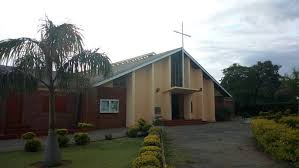

HOLYNAME CATHOLIC CHURCH Mabelreign
About Us
17 Wessex Drive,
Cotswold Hills,
Mabelreign,
Harare
Zimbabwe
History
The Holyname Catholic Church was founded in 1957.
It started as a Jesuit Parish until 2019 when it was handed over to the Diocesan in 2019.
It is part of the Archdiocese of Harare Inner City Deanery